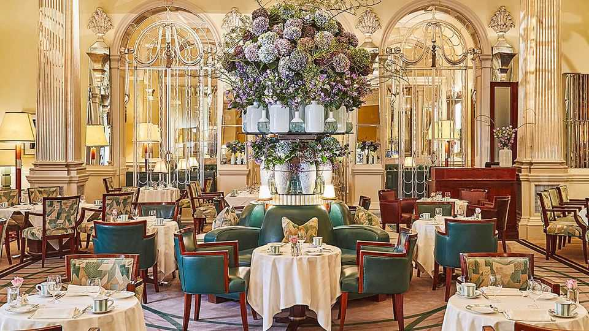

What goes on behind the doors of Claridge’s?
A new book gives readers a key card to the storied hotel’s past

Nov 5th 2026
THINGS CHANGE all the time inside hotels. Guests check in and out; towels and bed sheets are regularly laundered (or so you would hope). Hotels are also forced to accommodate upheavals that take place outside their doors. Two recent books, “The Finest Hotel in Kabul” and “Hotel Exile”, explored the turmoil of the 20th century from the front desks of hotels in Afghanistan and France. Now readers can journey to Claridge’s, one of London’s most prestigious hotels.
Martin Williams, a historian, traces how the hotel has witnessed all manner of political and cultural shifts since 1812. This is a top-down view of history, for Claridge’s clients have always been exceptionally posh. Princes and empresses slept there on visits to Britain; the future George IV, then prince regent, was thought to have slept there with lovers.
In periods of turmoil, such as the revolutions of 1848 and the second world war, European royals and aristocrats ousted from their countries took refuge in Mayfair. Alexander, the crown prince of Yugoslavia, was born in one of its suites in 1945. (Dirt was rumoured to have been spread under the bed so he could say he was born “on Yugoslavian soil”.) Legend holds that a diplomat once telephoned the hotel and asked to speak to the king. “Certainly, sir,” the operator said. “But which one?”
The war years are invariably the most fascinating. Soldiers back from Dunkirk—their uniforms still covered in “salt, sand and sweat”—lunched in the restaurant alongside women in hats. (Like the best hotels, this book pays attention to the details.) American officials moved in to be close to the embassy and were charmed by the hotel’s old-world grandeur. Though Dwight Eisenhower, then commander of American forces in Europe, was not among them: he took offence to his room’s “whorehouse pink” decor.
In the decades since, many notable people have strolled through the lobby. Audrey Hepburn first met William Wyler, the director of “Roman Holiday” (1953), in the hotel; the movie would make her a star and an Oscar winner. In 1974 Agatha Christie made one of her last public appearances at a dinner there, when she celebrated the premiere of the film adaptation of “Murder on the Orient Express”. In 1970 Jackie Kennedy Onassis prompted the hotel to overturn its long-standing policy banning women from wearing trousers.
The trousers tussle notwithstanding, Claridge’s has managed a difficult balance of tradition and innovation over the course of its two centuries. Mr Williams shows how it has adapted time and again to changing social mores and expectations of high-end hospitality. Today it lures foodies and fashionistas. Gordon Ramsay and Noma have had stints in the restaurant; since 2009 the hotel has invited a fashion designer to create its Christmas tree. (This year’s will be unveiled on November 25th, though the designer has yet to be announced.) If you do not feel like shelling out between £1,500 and £60,000 ($2,000-80,000) for a suite, “Claridge’s” offers a sweet (and cheap) escape. ■